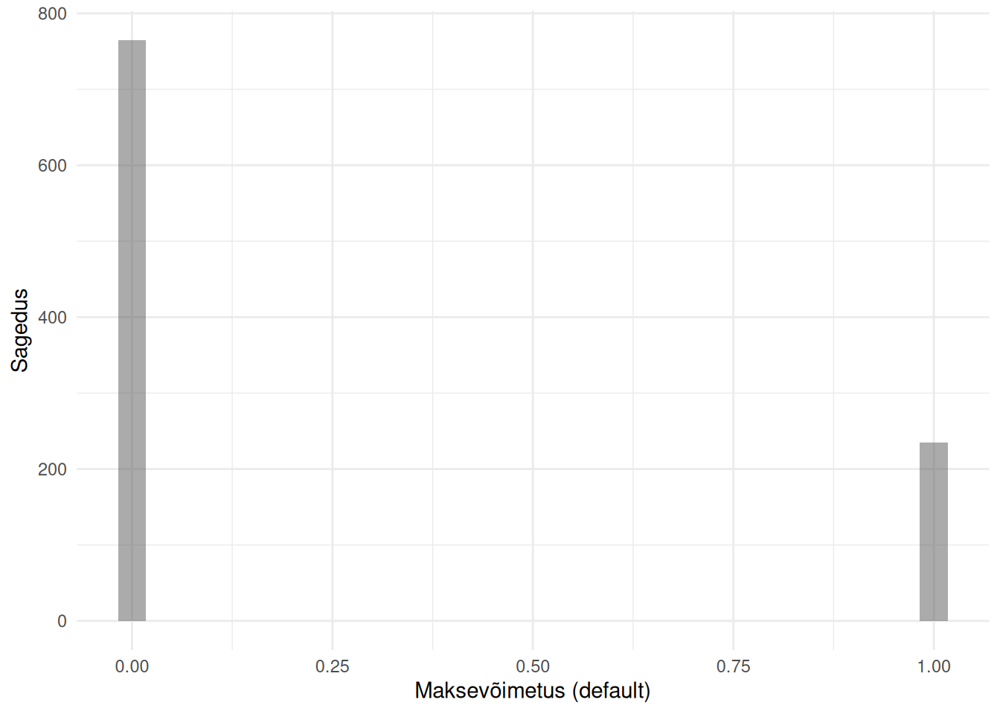
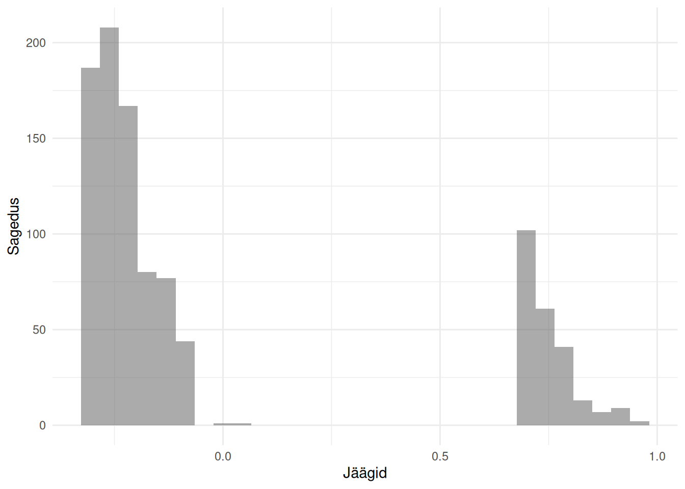
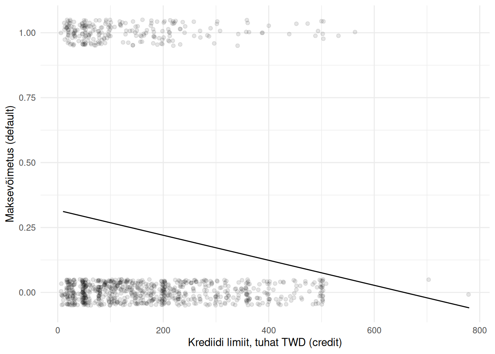
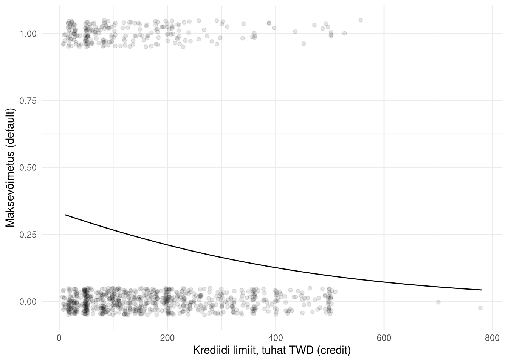
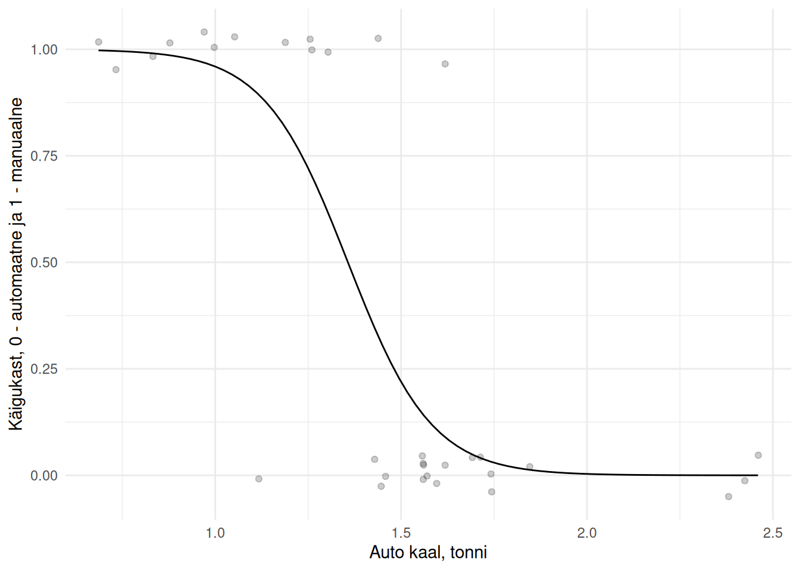

Vähimruutude meetodi alusel arvutatud lineaarse mudeli kehtivuse eeldus on, et regressioonijäägid on normaaljaotusega. See eeldus kehtib sageli siis, kui väljundtunnuseks on pideval skaalal mõõdetud arvtunnus. Muudel juhtudel ei saa aga regressioonijäägid peaaegu kunagi olla normaajaotusega. Üheks selliseks juhuks on olukord, kus soovime regressioonanalüüsi abil seletada binaartunnuste väärtusi ehk mõnda nähtust, millel saab olla ainult kaks tulemust. Statistikas sõnastatakse arvutused binaartunnuse kohta tihti sündmuse toimumise või mitte toimumisena. Praktikas tähendab see enamasti seda, kas vaatlusel on mingi omadus või ei ole. Selliste väljundtunnuste seletamiseks sisendtunnuste alusel peaksime leidma regressioonimudeli mitte vähimruutude põhimõttel, vaid kasutama logistilist regressiooni.
Logistist regressiooni abil saab vastata küsimustele selle kohta, kas ja miks mingi sündmus toimub:
Mis on tõenäosus, et konkreetne klient valib teatud teenuse?
Kas teatud tunnustega patsiendil on haigus või mitte?
Mis seletab kasutaja teenusest loobumist?
Kas konkreetne e-kiri on rämpspost või mitte?
Järgnevalt üritame regressioonanalüüsi alusel selgitada, millest sõltub krediidisaajate võimekus laenu teenindada. Kasutame selleks andmeid krediitkaardi krediidi (laenude) kohta, mis on kogutud 2005. aastal Taiwanis.
Meile huvipakkuvaks tunnuseks on kliendi maksevõimetus (default). Uurime, kuidas seda on mõõdetud.

Binaarse tunnuse jaotus histogrammil
Histogrammilt nähtub, et tunnuse väärtusteks võib olla 0 ja 1. Need tähendavad vastavalt laenukohustuste täitmise jätkamist ja täitmise katkestamist ehk maksevõimetust. Maksevõimetuid kliente oli peaaegu neljandik, mis iseloomustab hästi 2006. aastal alanud laenukriisi Taiwanis, millega kaasnesid kodutuse ja enesetappude sagenemine ning muud sotsiaalsed probleemid.
Leiame meile juba tuttava regressioonimudeli, mis seletaks maksevõimetust krediidi limiidi (credit) alusel.
Näeme, et 1000 iga dollarit krediidi limiiti vähendab maksevõimetust -0.000482 võrra, millel iseenesest ei ole tähendust. Piirefekti (marginal effect) lähenemist kasutades võib aga öelda, et vastavalt väheneb tõenäosus, et klient on maksevõimetu.
Vähimruutude meetodi sobimatus binaartunnuse seletamisel saab aga ilmsiks, kui uurime regressioonijääke.

Vähimruutude meetodi regressioonijäägid binaartunnuse seletamisel
Regressioonijäägid ei ole normaaljaotusega, vaid jaotus on hoopis kahetipuline (bimodal), mis tähendab, et vähimruutude meetodil leitud regressioonimudel antud juhul ei kehti. Sellele viitab ka regressioonimudelit iseloomustav sirge.

Vähimruutude meetodil leitud regressioonimudel binaartunnuse korral
Jooniselt näeme, et vähimruutude meetodil arvutatud regressioonimudel ei ole sobilik ka seetõttu, et selle alusel prognoositavad väärtused võivad olla ka väiksemad kui 0.
23.1 Logistiline mudel
Binaartunnuse korral eeldame, et selle väärtused järgivad binoomjaotust. Seetõttu peame regressioonmudeli arvutamiseks leidma lineaarse mudeli üldistatud kujul (generalized linear model ehk GLM). Üldistatud lineaarse mudeli kordajaid ei saa me aga arvutada vähimruutude meetodil, vaid peame kasutama suurima tõepära hindamist (maximum likelihood estimation ehk MLE), mille käigus leiame mudeli parameetrid, mille korral meie andmed kõige tõenäolisemad on. Nende tegevuste käigus leitakse logistiline mudel.
Important
Logistiline mudel (logistic model) on regressioonimudel, mis seletab binaarskaalal mõõdetud väljundtunnuse väärtuseid sisendtunnus(t)e alusel.
Logistilise mudeli arvutamiseks R keeles saame kasutada funktsiooni glm() üldistatud lineaarse mudeli leidmiseks, määrates argumendi family = binomial(link = 'logit'). Selleks peab väljundtunnusses olema sündmuse mitte toimumine ja toimumine määratud vastavalt kas väärtustega 0 ja 1 või loogilise tunnusena ehk väärtustega FALSE või TRUE.
mudel <-glm(default ~ credit, data = laenud, family =binomial(link ='logit'))mudel
Call: glm(formula = default ~ credit, family = binomial(link = "logit"),
data = laenud)
Coefficients:
(Intercept) credit
-0.703935391 -0.000003078
Degrees of Freedom: 999 Total (i.e. Null); 998 Residual
Null Deviance: 1090
Residual Deviance: 1066 AIC: 1070
Kuigi regressioonikordaja on sarnane vähimruutude meetodil leitule, siis logistiline mudel määrab seose tunnuste vahel erinevalt.

Logistiline mudel
Näeme, et logistine mudel ei ole graafiliselt mitte sirge, vaid kõver, mis on piiratud väljundtunnuse väärtuste 0 ja 1 vahele. See logistilise mudeli omadus ilmneb selgemalt, kui vaatame all esiatud mudelit, kus sisendtunnus eraldab väljundtunnuse väärtused selgemini.

Joonis 23.1: Logistiline mudel
Jooniselt selgub ka, et me ei saa tõlgendada logistilise mudeli kordajaid nii nagu vähimruutude meetodi alusel leitud mudeli korral. Väljundtunnuse muutus sisendtunnuse muutuse korral oleneb sellest, millise konkreetse väärtuse juures me sisendtunnust vaatame.
23.2 Regressioonikordajad
Logistilise mudeli kordaja näitab, kui palju suureneb sisendtunnuse ühe ühikulise suurenemise korral väljundtunnuseks oleva sündmuse toimumise logaritmiline šanss. Selle saab šanssiks teisendada võttes kordaja eksponendi. Šanss (odds) on sündmuse toimumise ja mitte toimumise jagatis ning näitab seega sündmuse toimumise ja mitte toimumise suhet.
Note
Logistilise mudeli kordaja märk näitab, kas sisendtunnuse väärtuse kasvades väljundtunnuseks oleva sündmuse toimumise šanss suureneb või väheneb.
Kordaja eksponent näitab, kui mitu korda on väljundtunnuseks oleva sündmuse toimumise šanss suurem selle mitte toimumisest, kui vastav sisendtunnus on ühe ühiku võrra suurem.
Uurime, millised šansid ilmnevad, kui lisame mudelisse ka krediidisaaja tausta iseloomustavad tunnused: vanus (age), sugu (gender), haridustase (education) ja perekondlik seis (maritalstatus).
mudel <-glm(default ~ credit + age + gender + education + maritalstatus, data = laenud, family =binomial(link ='logit'))mudel$coefficients # Kordajad
(Intercept) credit age
-0.796736765011 -0.000002939894 -0.000311098193
genderMale educationHigh school educationOthers
0.321119125002 0.224516997261 -13.086064657195
educationUniversity maritalstatusOthers maritalstatusSingle
0.186010296421 -0.144848303107 -0.280845535283
Lihtsuse huvides jätame praegu kõrvale kordjate usaldusvahemikud. Näeme, et üks dollar krediidi limiiti ja üks aasta vanust vähendavad maksevõimetust, sest vastavad kordajad on negatiivsed.
exp(mudel$coefficients) # Kordajate eksponendid
(Intercept) credit age
0.450797625104 0.999997060111 0.999688950193
genderMale educationHigh school educationOthers
1.378669805156 1.251717986945 0.000002073931
educationUniversity maritalstatusOthers maritalstatusSingle
1.204434661681 0.865153524259 0.755144969726
Nende kordajate eksponendid ehk šanssid näitavad aga mõlema tunnuse korral, et nende ühe ühikulise suurenemise korral suureneb tõenäosus olla maksevõimetu vastavalt 0.9999971 ja 0.999689 korda. Kuna suurenemine \(<1\) tähendab vähenemist, siis iga dollar krediidi limiiti ja iga aasta vanust vähendavad väga vähesel määral šanssi olla maksevõimetu.
Nimitunnuste tõlgendamiseks peame arvesse võtma nende võrdlusväärtusi.
$gender
[1] "Female" "Male"
$education
[1] "University" "Graduate school" "High school" NA
[5] "Others"
$maritalstatus
[1] "Married" "Single" "Others" NA
Nagu näeme eelnevast, siis eksponent kordajast genderMale on \(e^{0.3211191} = 1.3786698\). See tähendab, et meestel on võrreldes naistega 1.38 korda suurem šanss olla maksevõimetu kui mitte.
Sarnaselt saame järeldada, et šanss olla maksevõimetu on suurem madalama haridustaseme korral ja abielus olles. Järelduste tegemisel tasub jällegi meelde tuletada valikunihet (Peatükk 10), sest võib-olla pakuti nt abielus olijatele kergemini krediiti.
23.3 Prognoosimine
Logistilise mudeli alusel on võimalik prognoosida väljundtunnuse väärtusi sisendtunnuse väärtuste alusel. Prognoos on sellisel juhul väärtus vahemikus 0 kuni 1 (vt Joonis 23.1) ja saadud prognoosi võib tõlgendada sündmuse toimumise tõenäosusena vastvate sisendtunnuste väärtuste korral. Tõenäosuste prognoosimiseks üldistatud lineaarse mudeli korral peame funktsiooni predict() lisama argumendi type = 'response'.
mudel <-glm(default ~ age + gender + education, data = laenud, family =binomial(link ='logit'))tõenäosus <-predict(mudel, list(age =23, gender ='Female', education ='University'), type ='response')tõenäosus
1
0.2403401
Näeme, et 23 aastasel ülikooliharidusega naise tõenäosus olla maksevõimetu on 0.24 ehk 24%.
Sageli on vajalik prognoos aga algsel binaarskaalal ehk määrata mitte sündmuse toimumise tõenäosus, vaid konkreetsemalt, kas sündmus mingite sisendtunnuste väärtuste korral toimub või mitte. Sellisel juhul tuleb valida tõenäosuse lävend (threshold), millest alates määratakse sündmus toimunuks. Selliste prognooside täpsuse hindamiseks saame tekitada tabeli, mis näitab prognooside õigsust empiirilise sündmuse toimumise suhtes.
Mudeli prognoose olemasolevate vaatluste kohta näitab funktsioon fitted(). Kuvame need prognoosid histogrammil.
Kõikide andmetes olevate tunnustega mudel prognoosib kõikidele isikutele tõenäosuse olla maksevõimetu alla 0.5. Seega võiksime tõenäosuse lävendiks võtta nt 0.4 ja uurida, kui suur osa maksevõimetutest isikutest prognoositakse õigesti. Selleks saame kasutada veatabelit.
Tabelist selgub, et tõenäosuse lävendi 0.4 korral tuvastab mudel õigesti ainult 9 maksevõimetut, samas kui 226 tegelikult maksevõimetut isikut mudel selliseks ei pea. See näitab, et mudel ei ole maksevõimetuse prognoosimisel eriti täpne. Kasutatud andmed laenusaajate kohta ei ole piisavad selleks, et eristada maksevõimetuid teistest.
Teisendame veatabelis olevad väärtused osakaaludeks ja ümardame kahe komakohani.